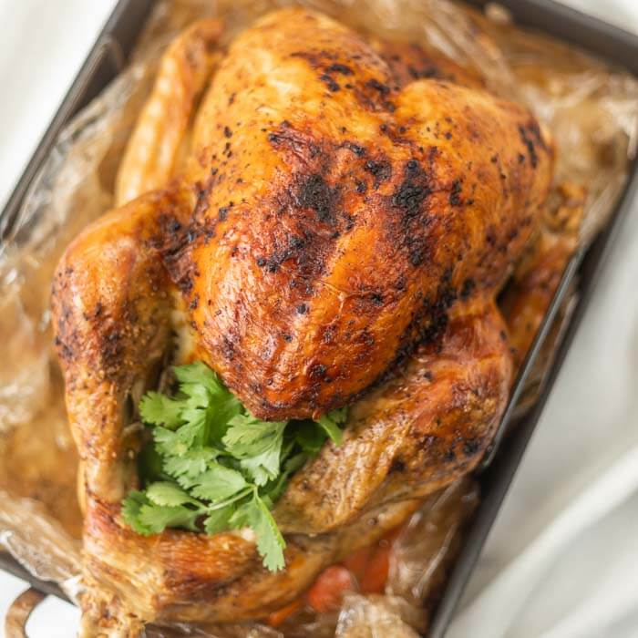

Home

Cooking turkey in a bag is easy with this recipe. Your Thanksgiving turkey will be perfectly moist when done, and you can make gravy out of the juice that forms in the bottom of the bag. Plus, cleanup is a snap! The cooking time will vary if your turkey is larger or smaller than 12 pounds.
Ingredients
- Turkey: This recipe calls for a whole 12-pound turkey. If your bird is larger or smaller, you'll need to adjust your cooking time.
- Seasonings: The turkey is simply seasoned with just salt and pepper, which allows the natural flavors to shine.
- Flour: Two tablespoons of flour keep the bag from bursting and help with browning.
- Vegetables: The turkey is roasted alongside onions and celery. For an extra pop of color, add carrots.
- Turkey Bag: You should be able to find turkey-sized oven bags at your local grocery store, likely in the aluminum foil and plastic wrap aisle.
Steps
- Prepare the Turkey: Remove and discard the giblets, pat the turkey dry, and season with salt and pepper.
- Pack the Bag: Sprinkle the bottom of the bag with flour. Place the turkey in the bag along with cut celery and onions. Seal the bag, transfer to a roasting pan, and use a fork to poke several holes in the bag.
- Roast the Turkey: Bake in a preheated oven until the juices run clear. An instant-read thermometer inserted into the thigh meat should read 180 degrees F.